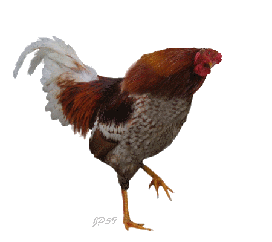

A házityúk


Háziasítás és eredete
A házityúk mintegy 4000 évre és több ősre vezethető vissza. A következő fajok vehettek részt a házityúk kialakulásában.
- bankiva tyúk vagy vörös dzsungeltyúk (Gallus ferrugineus)
- ceyloni dzsungeltyúk (Gallus lafayetti)
- szürke dzsungeltyúk (Gallus sonneratti)
- jávai dzsungeltyúk (Gallus varius)
A kutatók érvei szerint a házityúk populációjában túl nagy a változatosság ahhoz, hogy az egyetlen ősre legyen visszavezethető.Ezenkívül a házityuknak vannak olyan tulajdonságai, amelyek a bankivánál hiányoznak (pl. öt lábujj). Könnyü szelídíthetőségét valószinűleg a szürke dzsungeltyúknak köszönheti. Kotlás ideje 21 nap. Húsa kiváló, fehérjedús, zsírral átszőtt, mégis kalóriaszegény. Tojás 50-70 gramm súlyú, a többi baromfifajjal együtt mind nagyobb szerepet játszik a korszerű élelmezésben.